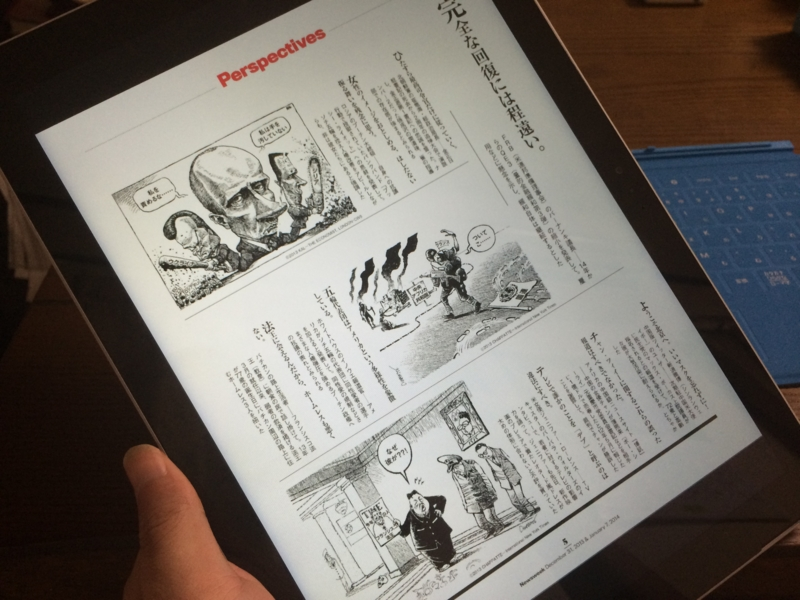
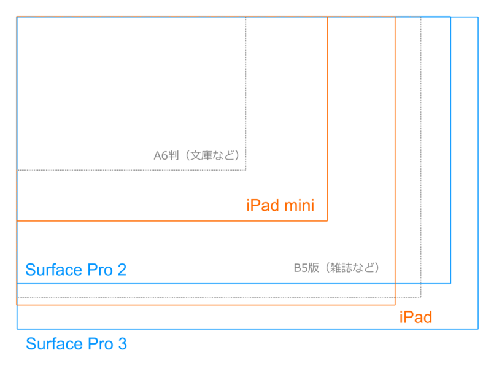

Surface Pro 3 気になるところ【解像度編】
執筆日時：

むかし、かーちゃんのパソコンが壊れて、代わりを選んでやらなきゃいけなくなったときの話。家電量販店に行くと、Surface Pro（たぶん 1 の頃だったと記憶している）のコーナーがあったのさ。で、かーちゃんに「これなんかどうよ」って言ってみたわけ（ダメもと＆自分が使ってみたい）。そしたら一言。「小さすぎない？」そういわれてみると、周りは大画面がウリのデッカいノートパソコンばっかりで、そこだけこじんまりしていて貧弱に見える。かーちゃん自身も最近目があまりよくなく、デカいディスプレイをご所望だったので、その時は VAIO のなんかデカいヤツをちょっと値切って買ったのだけど……まぁ、確かに少し小さいかな。実際、10 型の古い Surface Pro はあまり自分のカネで買う気が起きなかった。
で、12 型の Surface Pro 3 を手にしたのだけど……このデカさ、10 型より全然アリだと思った。

| 寸法 | ディスプレイ | 解像度 | |
| Surface Pro 3 | 292mm × 201mm | 12 インチ | 2160 x 1440（3:2） |
| Surface Pro 2 | 275mm × 173mm | 10.6 インチ | 1920 x 1080（16:9） |
| iPad（参考） | 241mm × 186mm | 9.7インチ | 2048 x 1536（4:3） |
| iPad mini（参考） | 200mm × 135mm | 7.9インチ | 2048 x 1536（4:3） |
デスクトップが広いし、雑誌がちょうど拡大・縮小なしで読める。さすがに見開きのページはちょっと字が小さめだけど、iPad mini で読むときみたいに拡大やスクロールに頼らずに読むことは可能で、ストレスが少ない。

Surface Pro 2 は細長くて、縦解像度が足りない感じだったのだけど、その点、Surface Pro 3 の 3:2 のアスペクト比は雑誌を読むにはちょうどいい。個人的には、
- iPad mini：マンガ、小説
- Surface Pro 3：雑誌
という役割分担がピッタリだと思う（iPad も、もうワンサイズ大きくていいんじゃない？）。
（閑話休題だけど、Surface mini はこの点で iPad mini には現状勝てないと思う。Kindle が日本に対応していないから。Surface mini は米国より日本の方で人気がでそうだけれど、Kindle も読めないのでは売れる要素がない。なので、Surface mini を出さないという決断は正解だと思ってる）
一方、大画面化によるデメリットもある。
まず、タブレットとしては重い。だいぶ軽く作ってあると思うし、これ以上の軽量化はバッテリーなどの分野でブレイクスルーがないと無理かなぁ、と思うのでこれは仕方がない気もするけれど。
- Surface Pro 3：1.49 kg/cm3
- iPad：1.53 kg/cm3
あと、タブレットとしてはやっぱり iPad mini 程度の大きさのほうが収まりはいいかな。雑誌読む頻度 << 文庫・マンガ読む頻度ってのもあるけど、今のところ寝床でも iPad mini を使うことの方が多い。自分の中で、Surface Pro 3 は ノートパソコン：タブレット＝2：1 ぐらいなイメージ（次回ぐらいに書こうかなと思うけど、ペンを使いだすとまた違ってくる。ペンいいぞ、ペン）。
次に、アプリによってはマルチサイズ対応がイマイチで、使い勝手に難がある。たとえば、Windows ストア の Windows 用 マガストア 電子雑誌書店 アプリ の場合、一瞬、雑誌の買い方がわからなかった。
正解は、グレーの詳細情報部分をスクロール。
コントロールの高さを決め打ちにしているので、せっかくの大画面が活かせていない。下の余白 is 何？ Why 罠をクリアしないとコンテンツを買うことすらできない？ 雑誌のサムネイルもフローできるようにすれば、三段表示になってコンパクトに大量のデータを表示できるのに。
でも、ストアアプリはまだマシな方*1。これがデスクトップ アプリともなると HiDPI 対応は悲惨の一語に尽きる*2。自分などわざわざ DPI*3を 100％ に下げて使っているぐらいだ（まぁ、これはこれでデスクトップが広くていいんだけど）。
よっぽど暇な人以外、そろそろ WinForm で開発するのは止めましょう（ついでにその Windows XP も窓の外に投げ捨てろ）。僕もこれから何かアプリ作るときは WPF にしておくよ……orz